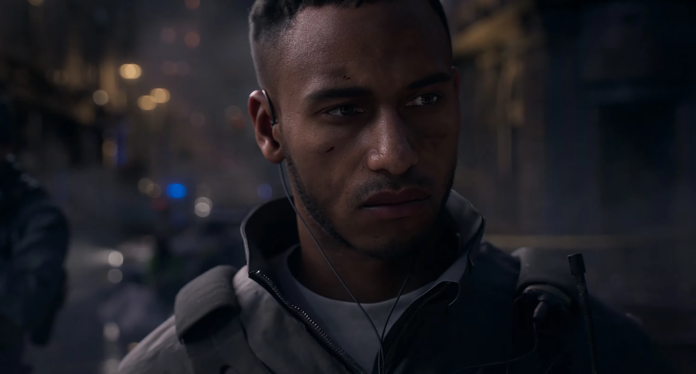
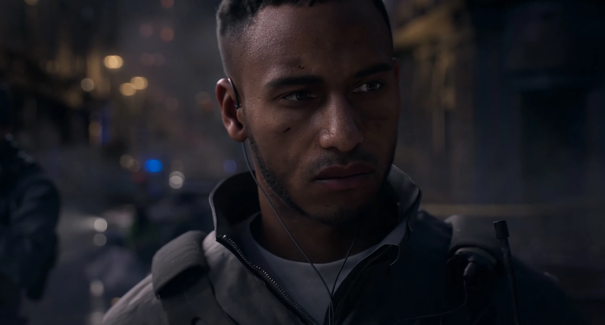

Il dispose également d'un champ de tir pour tester vos armes. Le système de mise à niveau a également été remanié car maintenant, lorsque vous obtenez un accessoire pour une arme à feu, vous obtenez l'accessoire pour toutes les armes du même type. Parallèlement à ce changement, il n'y a aucun moyen d'ignorer les animations de rechargement car elles ont ajouté des points de contrôle pour encourager le passage à votre secondaire dans un combat. On considère que ces changements changent complètement la façon dont les gens jouent au jeu et comment Infinity Ward va créer de nouveaux jeux."
"Modern Warfare II présente plusieurs personnages qui sont de retour : le capitaine John Price ( Barry Sloane ), le sergent Kyle "Gaz" Garrick ( Elliot Knight ), le lieutenant Simon "Ghost" Riley ( Samuel Roukin ), le sergent John "Soap" MacTavish (Neil Ellice), le chef de station de la CIA Kate Laswell ( Rya Kihlstedt ) et le chef rebelle urzikstani Farah Karim ( Claudia Doumit ). Les nouveaux personnages incluent le colonel des forces spéciales mexicaines Alejandro Vargas (Alain Mesa) et le PDG de la société militaire privée Shadow Company, le commandant Phillip Graves (Warren Kole ).
Le jeu se déroule en 2022, trois ans après que Price a formé l'unité multinationale d'élite antiterroriste Task Force 141 avec Gaz, Soap, Ghost et Farah; Vargas rejoint l'équipe en tant que dernier membre. Après qu'une frappe de missiles des États-Unis ait tué un général étranger, 141 sont appelés pour contenir la situation et empêcher une nouvelle escalade, tout en combattant l'organisation terroriste Al-Qatala et le cartel de la drogue connu sous le nom de Las Almas."
 
